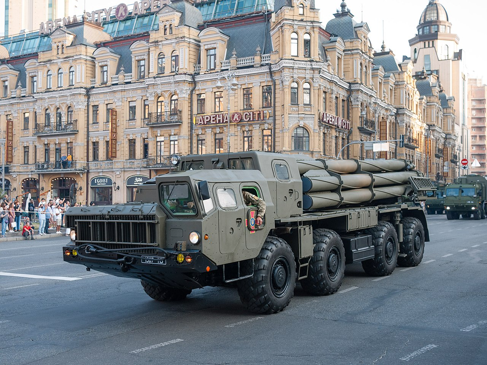
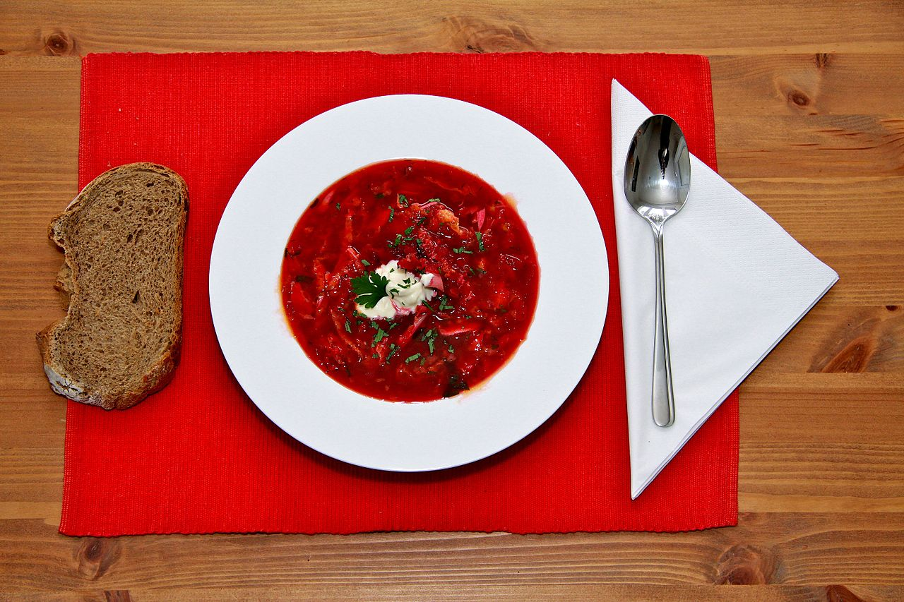

Збройні сили
Згідно з рейтингом Стокгольмського міжнародного інституту досліджень миру Україна займає 12 місце в рейтингу найбільших експортерів зброї. За даними інституту, найбільше зброї вона продає в Азербайджан, Грузію та Китай. Крім цього, Україна є експортером зброї в країни Африки — Південний Судан, Республіку Конго тощо. Керівник Центру аналізу світової торгівлі зброєю (ЦАСТЗ) Ігор Коротченко повідомив, що Україна займає третє місце у світовому рейтингу експортерів бронемашин на період 2007—2014 рр.
ЗСУ комплектуються шляхом призову на строкову службу чоловіків 18—27 років. Чисельність на 2015 рік становить 250 000 осіб. Військове управління Збройними силами здійснює Генеральний штаб.
Економіка
Україна — держава з розвиненою науковою та промисловою базою, член Світової організації торгівлі (з 16 травня 2008 р.). Одна з першої п'ятірки країн кумівського капіталізму за виданням The Economist у 2014 році.
Рівень життя населення
За 2019 рік Україна піднялась у рейтингу процвітання — плюс 15 позицій, наша країна посіла 96-е місце. Творці рейтингу (аналітичний центр The Legatum Prosperity) відзначили, що найсильніші сторони України — це освіта й умови життя, а слабкі — соціальний капітал.
Туризм
За даними рейтингу Всесвітньої туристської організації Україна займає восьме місце в Європі за кількістю туристів.Сім чудес України є її історико-культурними пам'ятками, які були обрані широкою громадськістю за допомогою інтернет-голосування.
Культура
Відомий дослідник української культури І. Огієнко зазначав, що українській культурі з самого початку були властиві відвертість світу, відсутність ксенофобії (боязні чужого) і гуманізм. «Споріднена праця» (за Сковородою) і самопізнання, свобода, заради якої не шкода розлучитися з благополуччям, обмеження життєвих потреб, надання переваги духовному над матеріальним — ось ті шляхи і рецепти щастя, яких дотримувались і які пропагували провідні українські мислителі.
Музика
Сучасна музична культура України представлена як академічною музикою, так і розважальною. В Україні діє 5 консерваторій (музичних академій), 6 оперних театрів, 5 будинків органної та камерної музики, філармонії в усіх обласних центрах тощо. Регулярно проходять фестивалі популярної («Червона рута», «Таврійські ігри»), рокової («Рок-екзистенція», «Тарас Бульба») джазової (Jazz Bez, Jazz Koktebel), етнічної («Країна мрій») та академічної музики («КиївМузикФест», «2Д2Н», «Контрасти»).
Кухня
Українська кухня — національна кулінарія, яка має свою давню історію та славиться різноманітністю, нараховує сотні рецептів: борщі й пампушки, паляниці й галушки, вареники й ковбаси, печені та напої з фруктів і меду, відомі далеко за межами України. Деякі страви мають багатовікову історію, як-от, наприклад, український борщ.
Спорт
Нападник Андрій Шевченко став справжнім символом України на футбольному полі, граючи за італійський «Мілан». Він — п'ятиразовий чемпіон України, чемпіон Італії. Володар «Золотого м'яча» 2004 року, найкращий гравець Ліги чемпіонів сезону 1998—1999 (визначений спеціальною комісією УЄФА у серпні 1999). «Золотою рибкою» називають Яну Клочкову, яка є чотириразовою олімпійською чемпіонкою, триразовою чемпіонкою світу, одинадцятиразовою чемпіонкою Європи тощо. Всесвітньо відомі українські боксери Володимир і Віталій Клички, Василь Ломаченко і Олександр Усик, художні гімнастки Катерина Серебрянська і Ганна Безсонова, фехтувальники Сергій Голубицький і Ольга Харлан, легкоатлети Іван Гешко, Інесса Кравець, Наталія Добринська, Богдан Бондаренко. З олімпійськими медалями повертаються зі змагань стрільці Микола Мільчев і Олена Костевич.
Україна подарувала світові величезну кількість талановитих людей. Видатні вчені, винахідники, Нобелівські лауреати, герої війни, громадські діячі, письменники, музиканти, обдаровані лікарі та спортсмени.
Відомі українці прославили нашу країну в різних куточках світу. Вони творили історію і зрештою змінили світ.